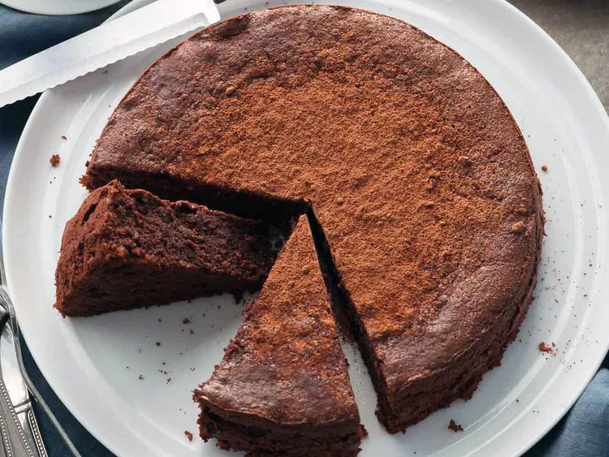

Chef John's Chocolate Decadence

Description
This dessert is pure decadence. The flourless chocolate decadence cake was all the rage in the 1980s. As I vaguely remember, the decade celebrated decadent overindulgence, and this dessert is that—and more. By modern standards, this cake is ridiculously rich. In fact, some of you may find it too intense, but most true chocolate lovers will be in heaven. Serve with ice-cold fresh raspberry sauce.
Ingredients
- 18 ounces semisweet chocolate, chopped
- 10 tablespoons unsalted butter
- 5 large eggs, at room temperature
- 4 teaspoons white sugar
- 4 teaspoons all-purpose flour
- 1 pinch cayenne pepper
- 1 pinch salt
Steps
- Preheat the oven to 425 degrees F (220 degrees C). Butter and flour a 9-inch cake pan.
- Melt semisweet chocolate and unsalted butter together in the top of a double boiler over simmering water, stirring frequently and scraping down the sides with a rubber spatula, until chocolate and butter are completely melted and combined. Remove from the heat.
- Beat eggs and sugar together in a bowl with a whisk or electric mixer until pale and very thick, 5 to 10 minutes. Sift in flour, cayenne, and salt; whisk to combine.
- Pour 1/4 of the egg mixture into the chocolate mixture; stir to combine. Pour chocolate mixture into remaining egg mixture and stir until combined. Pour batter into the prepared pan.
- Bake in the preheated oven until just barely set, with a jiggle below the surface, 14 to 15 minutes. Cool to room temperature, about 30 minutes. Wrap in aluminum foil and refrigerate until chilled, at least 1 hour.
Home